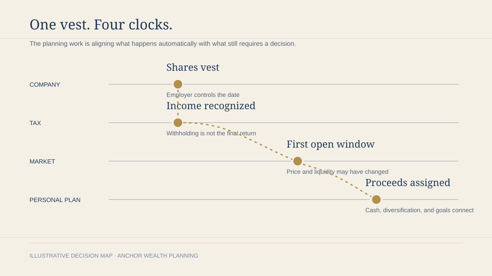

Equity and tax timing
How RSU vesting creates a tax-timing trap
Why the vest date, withholding method, trading window, and diversification decision need one shared calendar.
Read the 6-minute briefingAnchor Resources
Built for Houston executives, business owners, and families. Browse articles, podcast conversations, and practical frameworks by the decision in front of you.
Start here
Read the six-minute brief or listen to a focused planning conversation. Both lead to a practical next question.

Equity and tax timing
Why the vest date, withholding method, trading window, and diversification decision need one shared calendar.
Read the 6-minute briefingResource directory
Articles, podcast episodes, and working frameworks live together here. Filter by the issue that needs attention now.
Align vesting, withholding, trading windows, and the plan for the shares that remain.
Read briefing Podcast · Episode 01Put every decision, owner, and deadline on one shared calendar before the year gets crowded.
Listen to the podcast Framework · 5 minA practical division of labor across the advisor, CPA, attorney, and client.
View framework Checklist · 7 minQuestions to answer while the owner still controls the timeline and the range of options.
Explore topic Podcast · PreviewSeparate valuation, taxes, family goals, and deal timing before momentum makes the choice.
Listen to the podcast Family review · 5 minReview funding, beneficiaries, decision makers, and family communication after wealth changes.
Explore topic Podcast · PreviewWithholding is only one part of the decision. Concentration and cash flow still need a plan.
Listen to the podcast